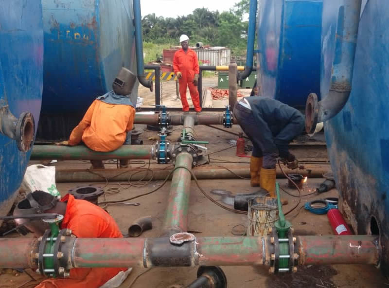
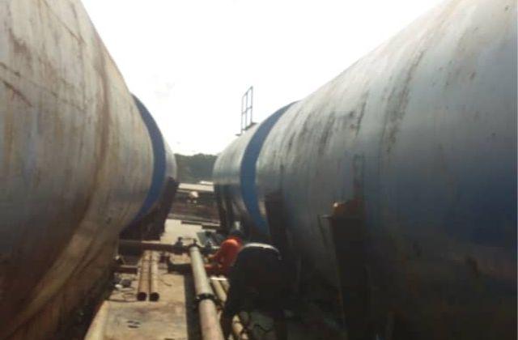
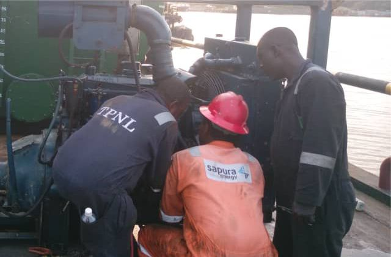
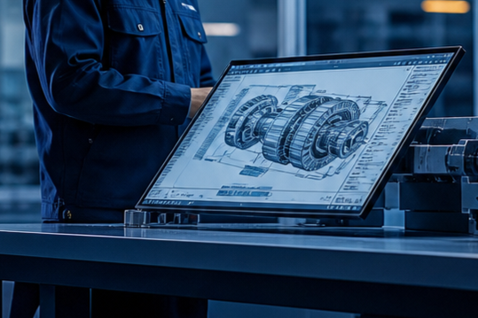

Service 07
Engineering & Technical Services
Skilled technical expertise to plan, maintain, and improve critical operations.




Engineering & Technical Services
STL Integrated Services also provides marine engineering services to maritime industry and shipyards for ship modernization or modification’s projects, system integration or installation of equipment and special features into the vessel in the most optimized way. We offer marine engineering services for specific projects of System Integration. Our skilled marine professionals are flexible in providing services tailored to meet the client need.
Technical capability that performs
Engineering design, maintenance planning, and technical support for ongoing operations.
Discuss your needs